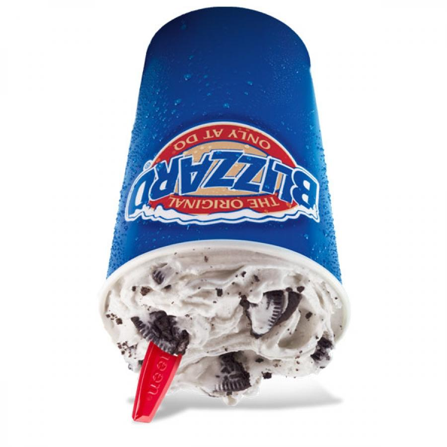

Homemade Blizzards

Description
Here you will find one of the most delicous recipes to make your very own homemade blizzard! This recipe is simple and will allow you to achieve a similar result to any blizzard bought at your local DQ. Please try the following recipe and let us know what you think!
Ingredients
- Vanilla bean icecream
- Oreos
- Vanilla extract
- Chocolate syrup
- Milk
- Whipped cream
- Chocolate chips
- Sprinkles
- Cherries
Steps
- In a blender, combine 2 cups of vanilla bean ice cream, 1/2 cup of milk, and 1 teaspoon of vanilla extract.
- Blend until smooth and creamy.
- Add in 6 crushed Oreos and blend for a few seconds until they are well incorporated.
- Pour the mixture into a large cup or bowl.
- Drizzle chocolate syrup on top and mix gently.
- Top with whipped cream, chocolate chips, sprinkles, and a cherry.
- Serve immediately and enjoy your homemade Blizzard!
Feel free to customize your Blizzard with different toppings or flavors!
If you would like to see a video on how someone created this delicious treat differently click here
Home